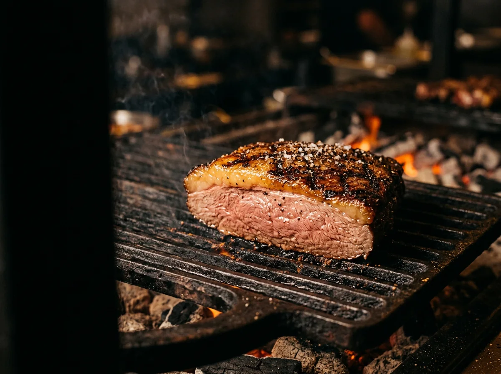
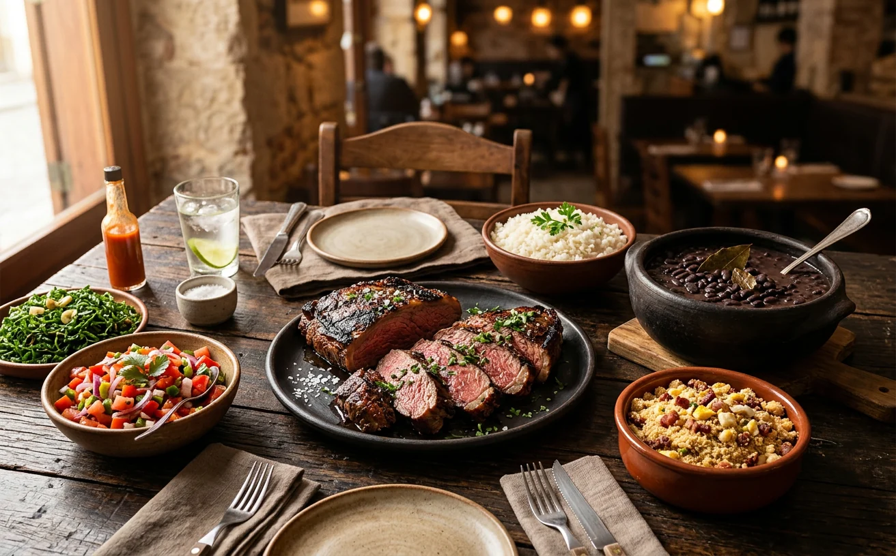
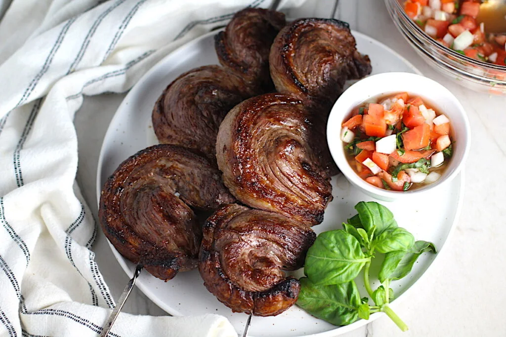

SABOR & FARTURA
Comida saborosa, pratos bem servidos e favoritos da brasa que conquistam a mesa.
O que os clientes destacam
Uma experiência que começa pelo sabor
Centro · Belford Roxo, RJ
Sabores brasileiros, porções generosas e aquele lugar onde uma boa refeição vira memória.

Uma mesa cheia de histórias
Um restaurante brasileiro feito para reunir pessoas, servir bem e colocar sabor de verdade no centro da mesa.
Tem lugar que combina com o almoço sem pressa, com o jantar depois de um dia cheio e com aquele encontro que sempre rende mais uma conversa. No Gato 284, comida saborosa e porções generosas acompanham momentos em família e entre amigos.
Conheça a experiência
01 / 03 A mesa é melhor
Sabor de verdadeMais pedido
DO JEITO QUE A BRASA PEDEUm dos grandes favoritos da casa, servido para quem não abre mão de sabor e fartura.
Pedir agoraAlmoço, jantar, bons encontros
Um espaço para almoçar, jantar, encontrar os amigos e aproveitar uma boa comida brasileira.
Encontre seu caminho até aquiUm bom prato
sempre vira
boa história.
Quem conhece, recomenda
Cerca de 2.882 avaliações
Um pouco do Gato 284
Do fogo à mesa: um convite para conhecer de perto os sabores e o clima do Gato 284.
Imagens ilustrativas dos sabores e da experiência brasileira.
Bem no Centro
Estamos no Centro de Belford Roxo. Vai ser um prazer receber você.
Tem lugar pra você
Reúna quem você gosta e venha viver a experiência Gato 284.